Digital Image Processing — Group H
Reading a city from its pixels
A classical, non-machine-learning pipeline that corrects illumination, recovers local contrast, separates coarse land cover from fine structure, and extracts edges and corners from a real aerial scene — every parameter derived from the image's own statistics.
 I‑45 / US‑59 interchange · Houston, TX
I‑45 / US‑59 interchange · Houston, TX
The pipeline, in order
Eight stages, each feeding the next. Every threshold below was solved from this specific image — none are hand-picked defaults.
Point processing
The scene's darkest quartile — shadowed building faces, tree canopy — starts at a mean intensity of 89.5/255. Gamma is solved in closed form so that quartile lands near mid-gray, then the image is stretched using its own 2nd/98th percentile rather than an assumed 0–255 range.
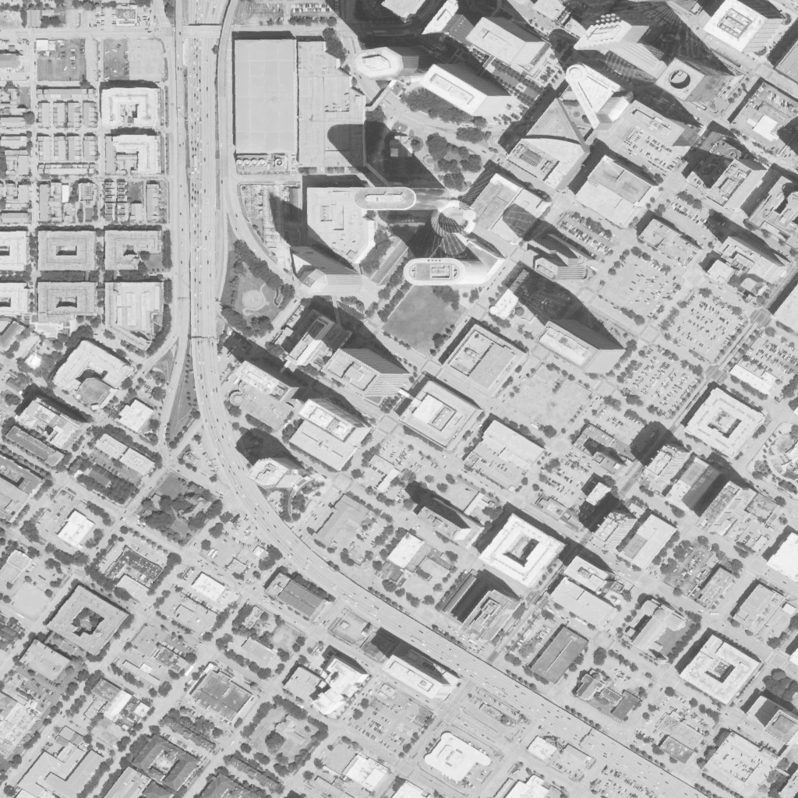
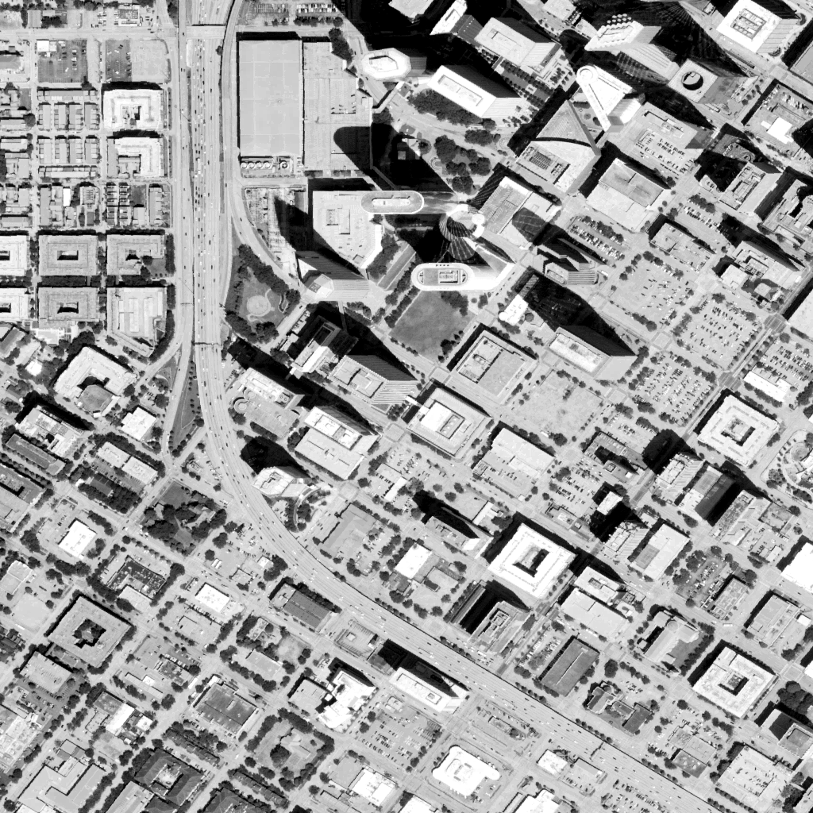
Histogram processing
CLAHE and global histogram equalization are run side by side and scored on contrast gain — output local contrast divided by input — separately in the dark and bright quartiles. CLAHE boosts both bands nearly evenly; global equalization pumps the already-bright pavement and actually loses contrast in shadow.
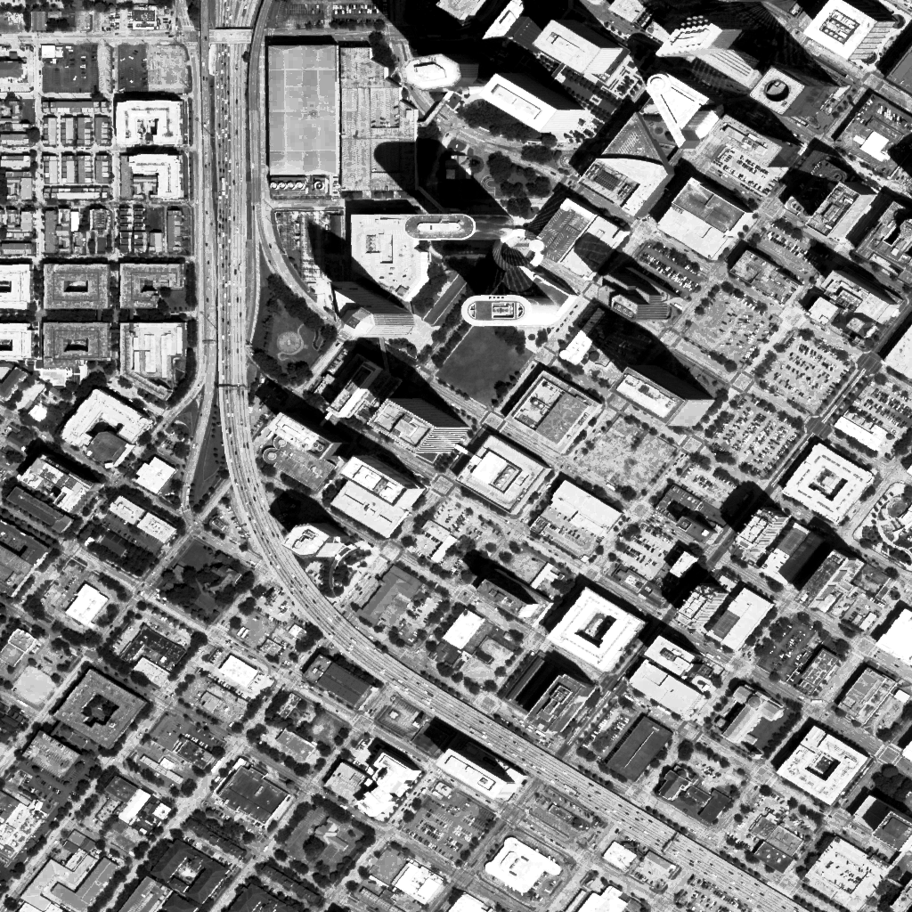
Spatial filtering
The live crop is fairly clean, so 2% synthetic salt-and-pepper noise is injected to genuinely test denoising. Median kernel sizes 3, 5 and 7 are compared by MSE against the clean reference; the smallest kernel that still wins is kept, then an unsharp mask is applied at the largest weight that keeps clipped pixels under a 5% budget.
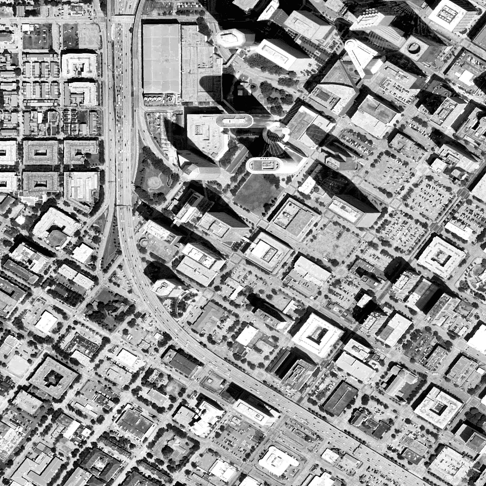
Frequency-domain filtering
The FFT's zero-frequency bin holds most of the image's total power, so it's excluded before choosing a cutoff — otherwise any percentage-of-power threshold is satisfied trivially at radius zero. The smallest radius capturing 90% of the remaining AC power splits coarse land-cover blobs from the street grid and rooftops.
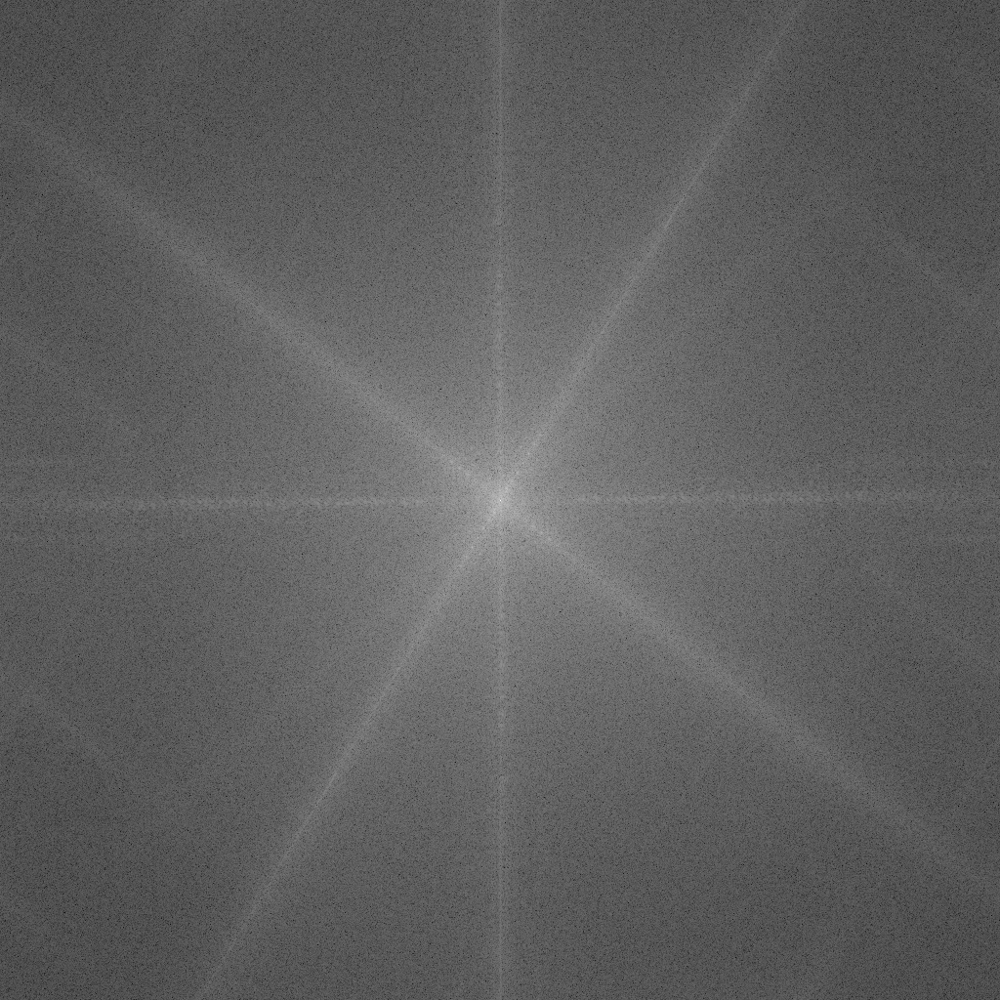
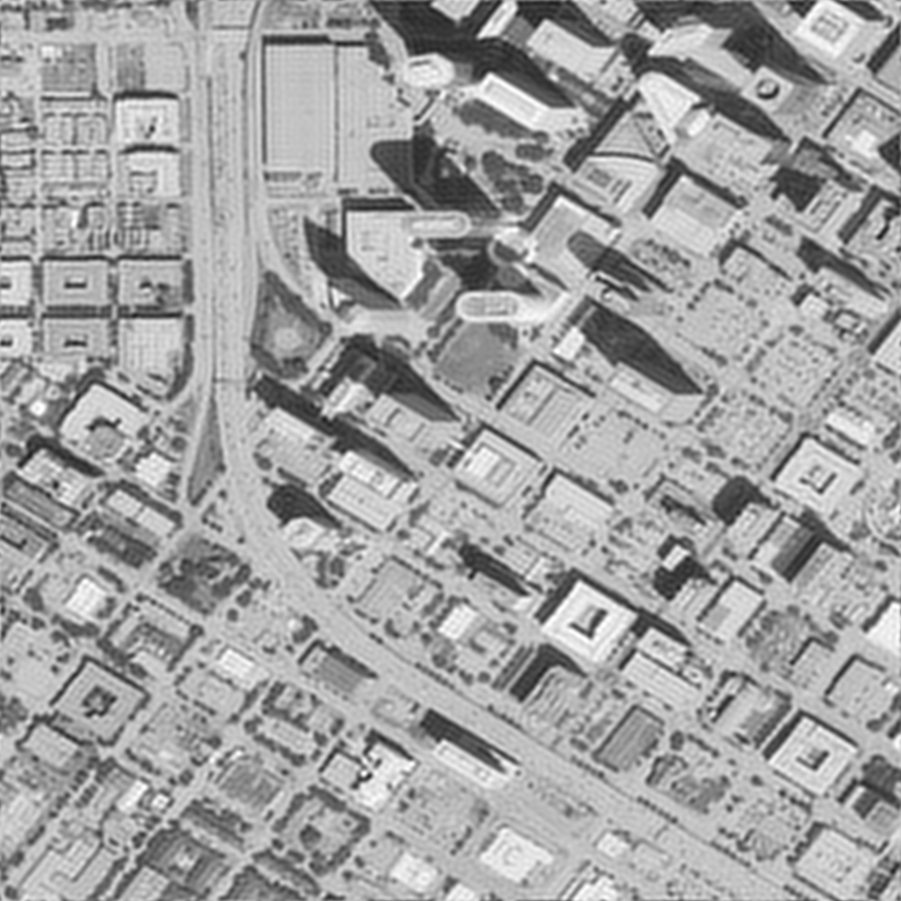
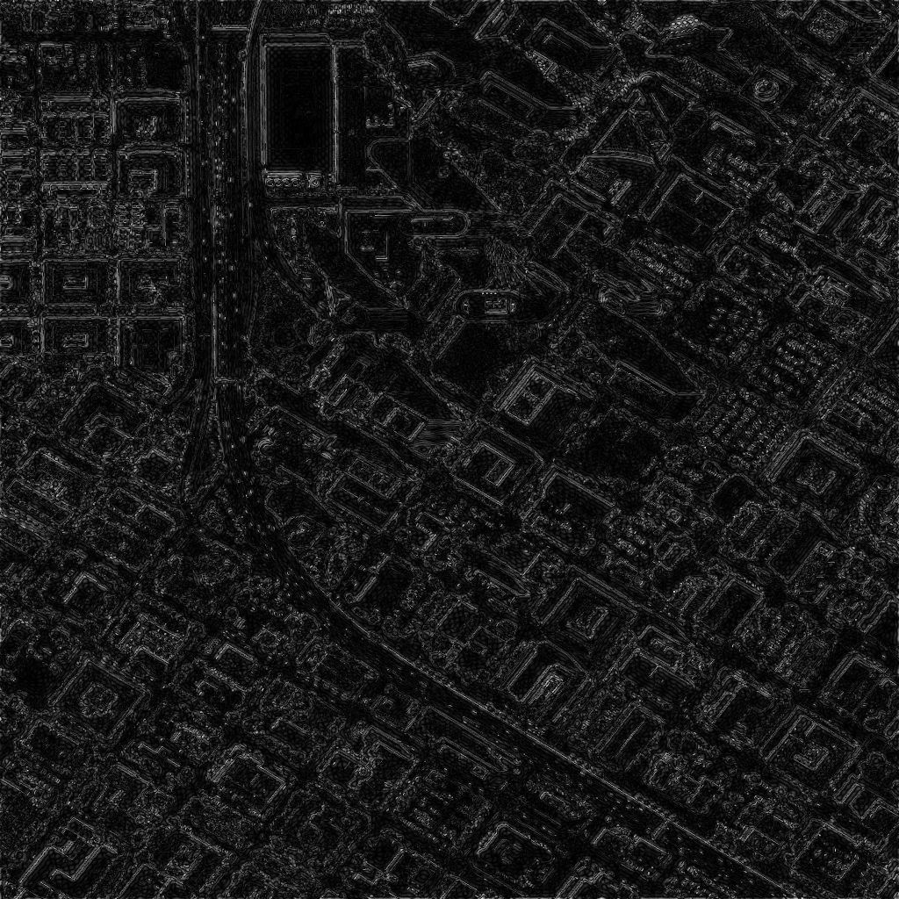
Edge and corner detection
Canny's thresholds come from the median of the gradient-magnitude histogram, computed on the sharpened image, rather than fixed defaults. Harris corner response is thresholded at 1% of its own maximum, concentrating on building corners, lot striping, and interchange ramp junctions.
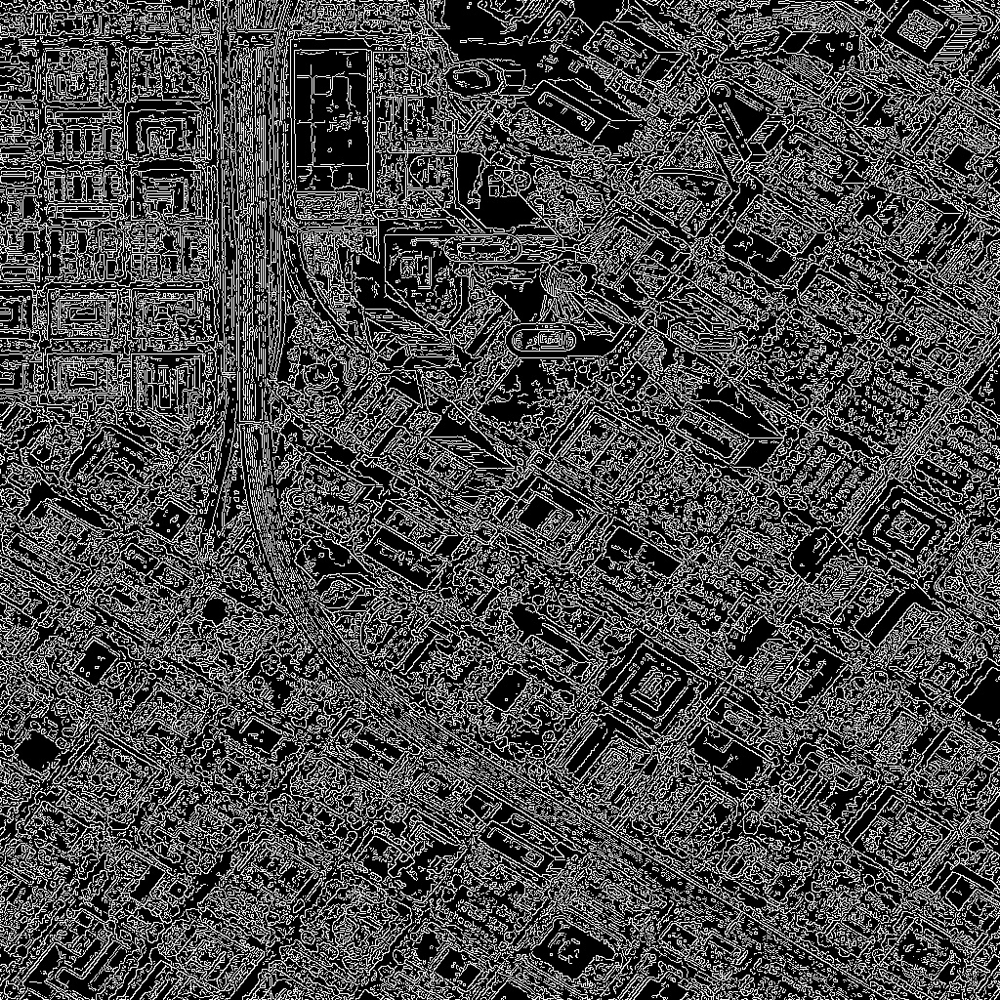
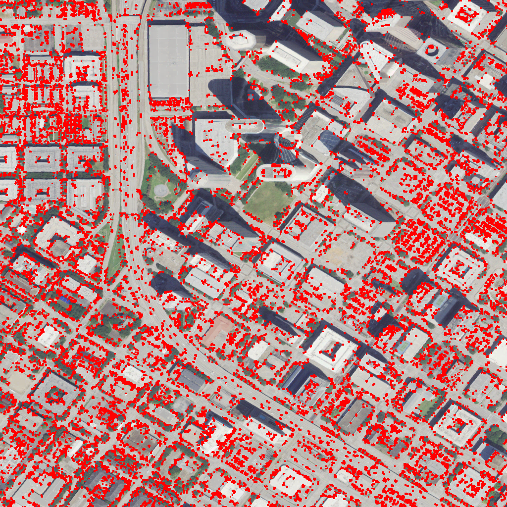
Optional extension — pretrained detection
A pretrained YOLOv8n is run on the same crop as a deliberate stress test. At 1 meter per pixel, a car spans roughly 4–5 pixels — below what a COCO-scale detector resolves — so it returns zero to one low-confidence detections. That gap is the expected failure mode, and it's the reason the classical Canny/Harris pipeline above is the more reliable structural-feature source at this resolution.
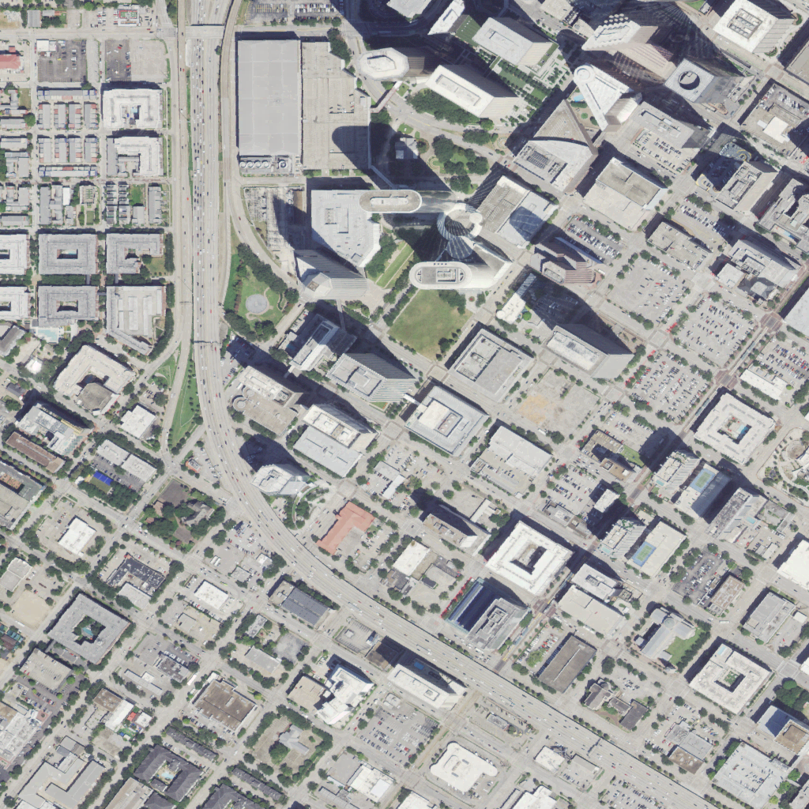
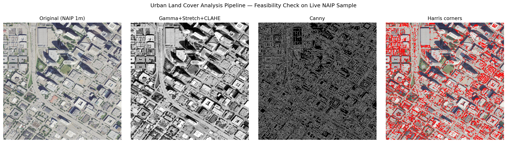
Every number, read from the run
Pulled live from outputs/metrics.json in this repository — not typed in by hand.
Gamma correction
—
Median kernel
—
Sharpen weight
—
FFT cutoff radius
—
Canny thresholds
—
Harris corners
—
Validation, including what went wrong
Two bugs were caught during development, and an independent review pass caught a third — a wrong conclusion — before this was published.
- fixedGamma formula was inverted. An early version computed the reciprocal exponent, which darkened the image instead of brightening it. Caught by hand-checking the shadow-quartile mean against the target.
- fixedFFT cutoff radius locked at zero. The zero-frequency bin holds most of the spectrum's power, so any percentage-of-power threshold was satisfied trivially before any real cutoff was found. Fixed by excluding that bin from the search.
- caught in reviewThe CLAHE-vs-global-equalization claim was backwards. An earlier metric compared raw output contrast rather than contrast gain over the input, and concluded the opposite of what the data actually showed. An independent pass re-derived the formula by hand, caught it, and the metric was rebuilt to compare gain in the dark and bright quartiles directly.
- verifiedRe-run from a clean clone on a second machine. Gamma, FFT cutoff, and Canny thresholds reproduced to full floating-point precision with no manual tweaking — see the verification log.